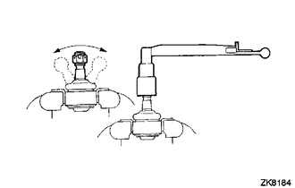
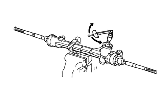

RM3140CG
_55
转向
_023997
转向机/转向传动机构
_0117159
转向机
G
转向机/转向传动机构 转向机 检查
程序

 1.检查左侧横拉杆接头分总成
1.检查左侧横拉杆接头分总成
a.

将左侧横拉杆接头分总成固定在台钳的两个铝板之间。
- 备注：
-
不要过度紧固台钳。
b.
将螺母安装到双头螺栓上。
c.
前后拨动球节 5 次。
d.
使用扭矩扳手和螺母，以每圈 2 至 4 秒的速度连续转动双头螺栓，在第五圈时检查转矩。
- 标准转矩:
0.98 至 3.92 N*m（10 至 39 kgf*cm，9 至 34 in.*lbf）
如果转矩不在规定范围内，则用新的左侧横拉杆接头分总成更换。
e.
检查并确认防尘罩无裂纹且其上没有润滑脂。
如果防尘罩破裂或其上有润滑脂，则用新的左侧横拉杆接头分总成更换。
2.检查右侧横拉杆接头分总成
- 提示：
-
执行与左侧相同的程序。
3.检查总预紧力
- 备注：
-
通过拆下右侧和左侧横拉杆接头分总成和转向齿条防尘套，检查无负载条件下的总预紧力。
a.

2.281,0.792 2.76,0.792
false
2.813,0.708 3.271,0.906
0.458,0.198
10
false
SST
将 SST 安装到小齿轮轴上并向左和向右转动 5 次或更多次。
- SST
- 09616-00011
b.
使用 SST 和扭矩扳手，以每圈 4 至 6 秒的速度连续转动小齿轮轴，以检查转向机总成的总预紧力。
- 标准预紧力:
1ZR-FE、4ZR-FE 除 1ZR-FE、4ZR-FE 外 0.8 至 1.3 N*m（9 至 13 kgf*cm，8 至 11 in.*lbf） 0.9 至 1.4 N*m（10 至 14 kgf*cm，8 至 12 in.*lbf）
- 备注：
-
检查转向齿条中央位置周围的总预紧力。
如果总预紧力不在规定范围内，则用新的转向机总成更换。